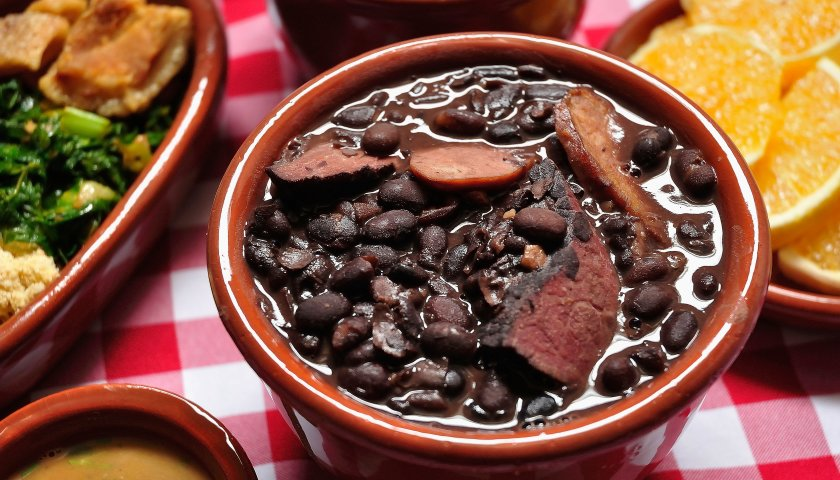

Feijoada

Description
Brazilian Feijoada is a black bean and pork stew that Brazilians often serve topped with farofa, toasted cassava flour. Many call this comfort food the national dish of Brazil.
Ingredients
- Beans
- Pig’s ear, feet, and snout along with Brazilian sausage and carne seca
Steps
- Soak beans overnight
- In a large heavy-bottom soup pot, over medium heat, add the oil and bacon. Cook until crisp and transfer to a plate.
- Use the same saucepan to brown ribs and sausages in batches. (You will want to be sure to cook the sliced Mexican chorizo on its own, as it can be very greasy. Drain the grease before continuing.) Set each aside as cooked.
- If needed, add more oil to the pan. On medium-high, sauté onion, and garlic until soft and translucent, about 5 minutes. Add tomatoes and cook for another 3 minutes.
- Drain and rinse the soaked beans. Add them to the pot along with the ribs, bacon, sausages, salt, pepper, and bay leaf. Cover with water (about 8 cups).
- Bring the mixture to a boil and reduce the heat to low. Cover and let it cook for 2 to 2 and a half hours, or until the beans are soft.
- If the stew is too liquidy, uncover the saucepan and continue to cook for another 20 minutes to allow some of the liquid to evaporate.